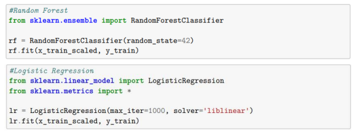
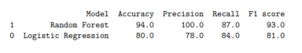
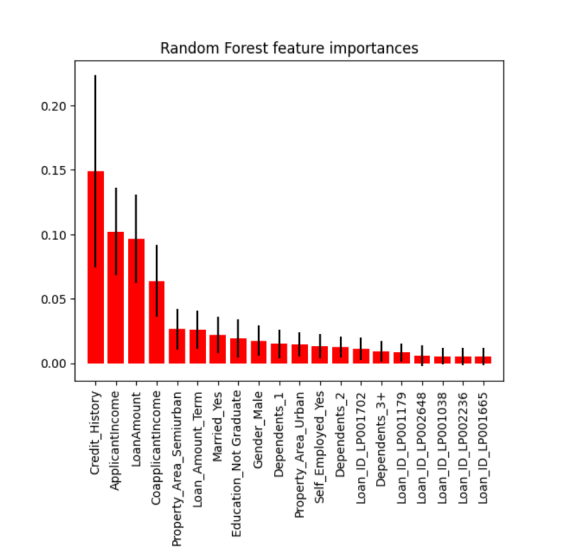
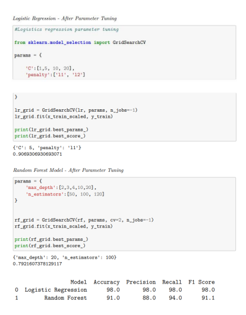

Introduction
The primary goal of my project was to develop a predictive model which would increase the efficiency
and accuracy of the process of obtaining approval for a home loan. Being able to quickly identify and
approve customer loans based upon their application data has wide reaching impacts for both lenders
and borrowers.
While the approval process is complex, and many factors – prior credit history, income, and loan amount
for example – are taken into consideration before an individual receives disbursement of funds, there is
inherent risk that a lender may approve a loan for someone who may ultimately cost this lender money.
In fact, according to the Consumer Financial Protection Bureau (2023), the percentage of mortgages in
the US that were between 30-89 days delinquent from 2008-2022 ranged between 4 to 1 percent.
For consumers, delays in loan approval can cause considerable disappointment in a highly competitive
housing market. Comparing June 2022 to June 2023, there was a year over year decrease of 29 % of new
homes listed (809,234 vs. 576,897). For the total number of homes for sale for the same months, reports
indicate a 17% decrease in available inventory (1,113,438 vs. 921,004). To compound matters, the
median number of days on the real estate market for this June was 29 days before an offer was accepted
(Redfin, 2023). What this can mean is that if there is anything that could be causing a delay with the loan
approval process, a consumer may find themselves looking for a home for quite some time.
We hope that this modeling will offer financial institutions a new approach for establishing loan
eligibility, allowing them to provide better and faster services to more potential customers, creating
value for both lenders and borrowers alike.
Methods
Many datasets were reviewed during the early stages of the project, with particular emphasis on finding datasets of sufficient length and enough features to be able to draw meaningful conclusions. Ultimately, we landed on a dataset obtained via Kaggle which was comprised of 614 rows and 13 columns (Kumar, 2020) due to its high quality and reasonable number of features. These features consisted of expected information from loan applications including but not limited to gender, income, marital status, loan amount, and education. During exploratory data analysis, we identified both missing data and outliers (values more than 3 standard deviations from the mean for our numerical features) and removed these as part of our data cleansing steps. Oversampling was employed to address data imbalance in the target variable. Dummy variables were generated and then the best features were selected to reduce the dimensionality from 465 to just 30 features. An 80/20 split was employed to create training and test datasets for modeling and both sets were normalized with RobustScaler. As the project at its core is a binary classification problem – is this loan approved or not – we discussed suitable candidates which would work well for this purpose, making the decision to compare logistic regression and random forest models as shown below:

These models were evaluated using accuracy, precision, recall and F1-score. While the initial results were likely more than suitable, hyperparameter tuning with grid search and cross validation was nonetheless preformed to enhance the modeling. The predictability of these subsequent models was reevaluated using the same measures as prior untuned versions
Results
Initial results on the untuned models suggested that the Random Forest Classifier could likely be a better model for the purposes of predicting loan approvals, with accuracy, recall, precision, and F1-scores all outperforming those of the logistic regression.

An analysis of the feature importance in the random forest model showed that 4 features were considerably important in predicting loan approval – credit history, applicant income, loan amount, and coapplicant income.

However, after hyperparameter tuning was completed, we found that the logistic regression proved to be a better model for predicting loan analysis, with the best logistic regression model possessing accuracy, precision, recall, and F1- scores at 98% while the Random Forest Classifier’s accuracy and F1- scores dropped to 91% each. Below are the hyperparameters and the accuracy measures for our respective tuned models
